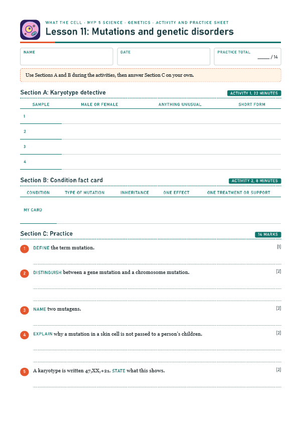

By the end of the lesson you can
- Describe gene mutations and chromosome mutations
- List causes of mutation, including mutagens
- Describe four genetic conditions and how they are inherited
- Identify trisomy 21 from a karyotype
Keys: arrows or a presentation clicker move the slides, F for full screen. Slides with a red dot have a video or simulation.
Videos (all 5 minutes or less)
- 4:08
Inherited Genetic Disorders
FuseSchool. While you watch: What is polydactyly, and is it dominant or recessive? Slide 9.
Simulations
- Lab
- Lab
Print and practise

Activity and practice sheet
Used in the lesson’s activities, with practice questions. Your teacher has the answers.
Download (PDF)Lesson 11 slides
All 19 slides in one file, to read again or print. The video buttons on the slides open YouTube.
Download the slides (PDF)Revising? The Revision tab on the unit page has the unit notes and review.
Notes: Mutations and genetic disorders
mutation
A random, permanent change in DNA. If it happens in a gamete it can be passed on to children..
mutagen
Anything that increases the rate of mutation. For example: sun cream blocks UV, a mutagen.
non-disjunction
A chromosome pair failing to separate in meiosis, giving a gamete with an extra or missing chromosome. For example: more likely as egg cells age.
Key words
| mutation | a random change in DNA |
|---|---|
| gene mutation | a change in the bases of one gene |
| chromosome mutation | a change in a whole chromosome or a large part |
| mutagen | something that increases the rate of mutation |
| trisomy | three copies of a chromosome |
| non-disjunction | chromosomes failing to separate in meiosis |
| genetic disorder | a condition caused by a faulty allele or chromosome change |